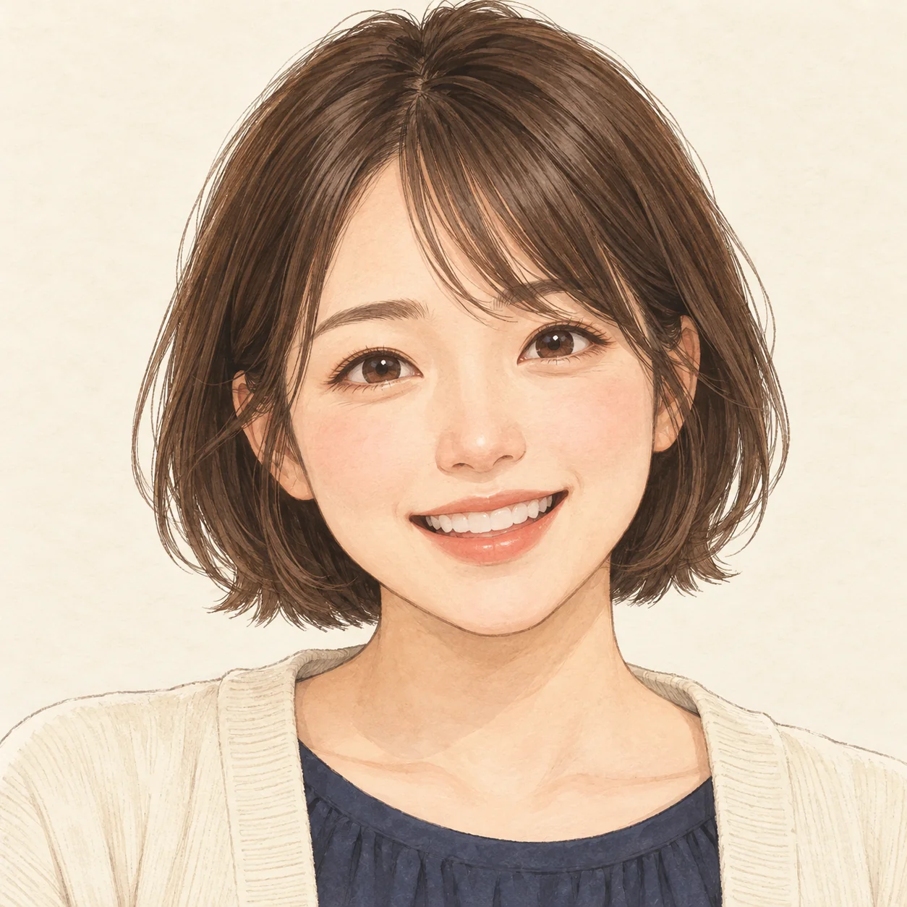
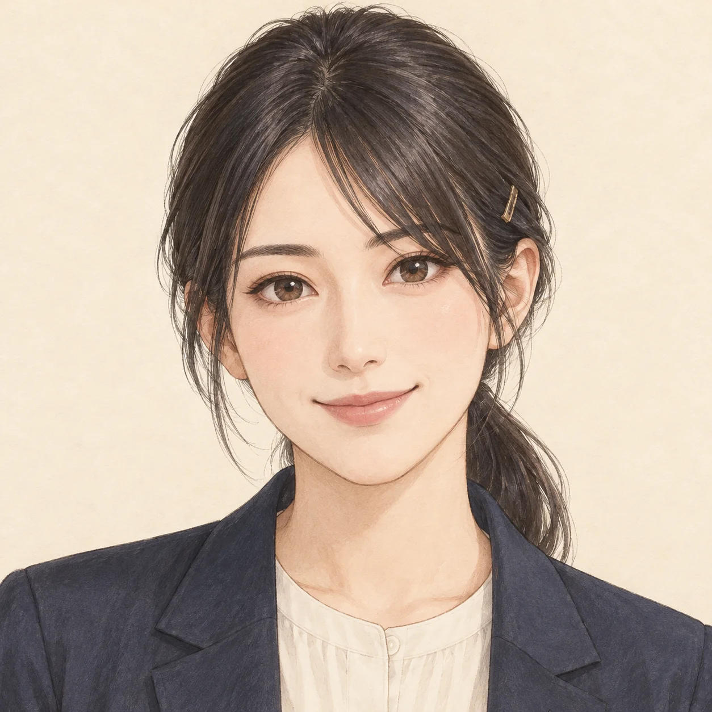
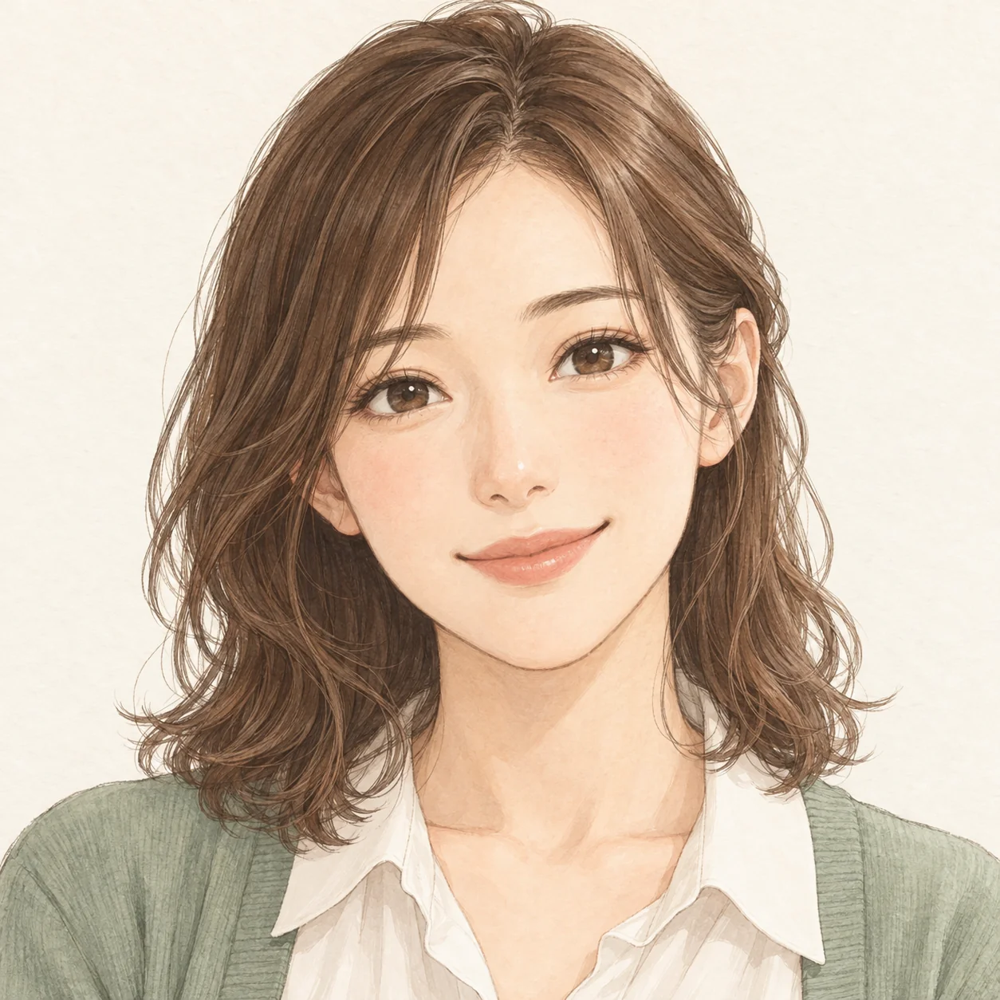

A明るく、親しみやすい短いボブと素直な笑顔。初めての部活にも、気軽に声をかけてくれる先生。副顧問の先生まずは5人で、音を合わせてみましょう。副顧問の先生来週の本番へ、体力も残しましょう。
Bきりっと、頼れるまとめ髪と落ち着いた目元。合奏や本番で、そっと背中を押してくれる先生。副顧問の先生まずは5人で、音を合わせてみましょう。副顧問の先生来週の本番へ、体力も残しましょう。
Cやさしく、穏やか柔らかな髪と安心する表情。うまくいかない週にも、そばにいてくれる先生。副顧問の先生まずは5人で、音を合わせてみましょう。副顧問の先生来週の本番へ、体力も残しましょう。